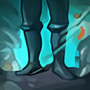
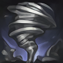

核心裝備
 和諧回音
和諧回音 流水之杖
流水之杖 熾灼魔器
熾灼魔器 蘇瑞亞的戰歌
蘇瑞亞的戰歌 米凱的祝福
米凱的祝福

以下為本站 7.2d 校正後的標準配置；實戰仍需依敵方陣容調整。


技能優先：E > W > Q

珍娜獲得額外跑速，附近友方英雄也會獲得相同類型的跑速增益，使隊伍更容易轉線與拉扯。

召喚短暫充能的龍捲風，向前移動並造成魔法傷害與擊飛；技能最多儲存兩次充能，可連續處理不同進場者。
提高珍娜與附近數名友軍的跑速，並對鄰近敵人造成魔法傷害，適合追擊、撤退與短距離換血。
同時替珍娜與附近生命最低的友軍提供護盾；若附近有防禦塔，也會替防禦塔套上護盾。
召喚風暴擊退附近敵人，並留下持續治療鄰近友軍的季風區域；施放後珍娜可自由移動。
1技擊飛第一名突進者 → 3技保護生命最低主力 → 再次1技處理後續進場 → 2技群體加速拉開 → 虛弱敵方爆發核心
不要一次把兩次龍捲風都交在同一目標上，分開處理前後兩波進場，能大幅延長後排安全時間。
4技擊退貼身敵人 → 施放後立刻移動到安全位置 → 3技補上雙盾 → 2技帶隊撤退或反追 → 1技封鎖追擊路線
新版大絕不需要持續引導。擊退完成後立即調位，讓隊友留在治療範圍內，同時避免自己成為下一個目標。
3技先套盾 → 2技提高跑速並傷害敵人 → 普攻補傷害 → 1技擊飛反打者 → 利用被動與加速拉開
護盾先於換血施放，二技提供的群體跑速能讓射手同步上前；敵人反打時用龍捲風中斷。
颶風呼嘯最多能儲存兩次充能，可先沿敵方進場路線放置，再保留第二次處理突進。和風守護會提高自己與附近友軍跑速並傷害鄰近敵人，換血後可快速拉開。風暴之眼會同時替珍娜與附近生命最低的友軍套盾，射手準備補刀或遭到消耗時提前施放。
珍娜靠被動與二技帶隊快速轉線，物件前先站在主力附近，不要單人走進黑暗。對方強開英雄出現時，先用龍捲風擊飛或大絕擊退，接著以雙盾和群體加速重整陣形。復甦季風施放後不需持續站立引導，珍娜可以自由移動，應立即調整位置避免被二次切入。
後期以保排優先，不必勉強從正面開戰。兩次龍捲風分別處理第一名與第二名突進者，風暴之眼持續保護生命最低的核心。若敵方多人貼近，開大擊退並留下治療區；擊退方向可能把敵人送到安全位置，因此先站在己方主力旁側再施放。
對局名單是本站依英雄機制與目前配置整理的參考，不等同固定勝率。
輔助調整以團隊承傷、解控與保護主力為優先，不為了單一敵人破壞整套功能裝。
觸發：敵方主要輸出集中在射手、物理刺客或普攻型英雄。
日輪的加冕提供團隊護盾與雙防，讓軟輔先保住主力再繼續施放治療／護盾。
觸發：敵方主要威脅來自法師、AP刺客或大量範圍魔法傷害。
日輪的加冕提供團隊護盾與雙防，能先撐過第一輪範圍爆發。
觸發：敵方硬控能直接抓死己方主力，或你進場後會被連續控制。
標準配置已有米凱、韌性鞋線或其他解控／防先手工具。
提醒：米凱主要替隊友解控；水星彎刀則是物理英雄自我解控，兩者角色不同。
觸發：敵方有大量治療、吸血或回復，讓己方集火很難完成擊殺。
黑魔禁書能由魔法傷害穩定施加重創，適合法師與軟輔處理大量治療。
觸發：己方只有一個主要輸出點，且敵方每波團戰都會集中切入他。
日輪的加冕提供額外即時護盾，讓你有時間接後續治療與保排技能。
提醒：保排調整看己方陣容，不是看到敵方刺客就把所有功能裝都換成防裝。
7.2a 輔助路第四批正式攻略：技能名稱與 4.3d 重製後雙充能颶風呼嘯、群體和風、雙目標風暴之眼及可自由移動的復甦季風機制依 Riot Games 台灣《激鬥峽谷》珍娜英雄頁與官方重製公告校正，版本基準採官方 7.2a 更新公告；出裝、符文、技能順序與對局方向依本站既有輔助資料整合。Tier 維持本站既有輔助路評級。｜v73：套用瑟雷西 v69 輔助固定母版。
本站於 2026-08-27 依 Patch 7.2d 重新檢查此配置。 Tier、出裝、符文與對局屬於 Wild Rift Guide 的整理與分析，不是 Riot Games 官方推薦；版本改動後會再依官方公告與實戰資料校正。